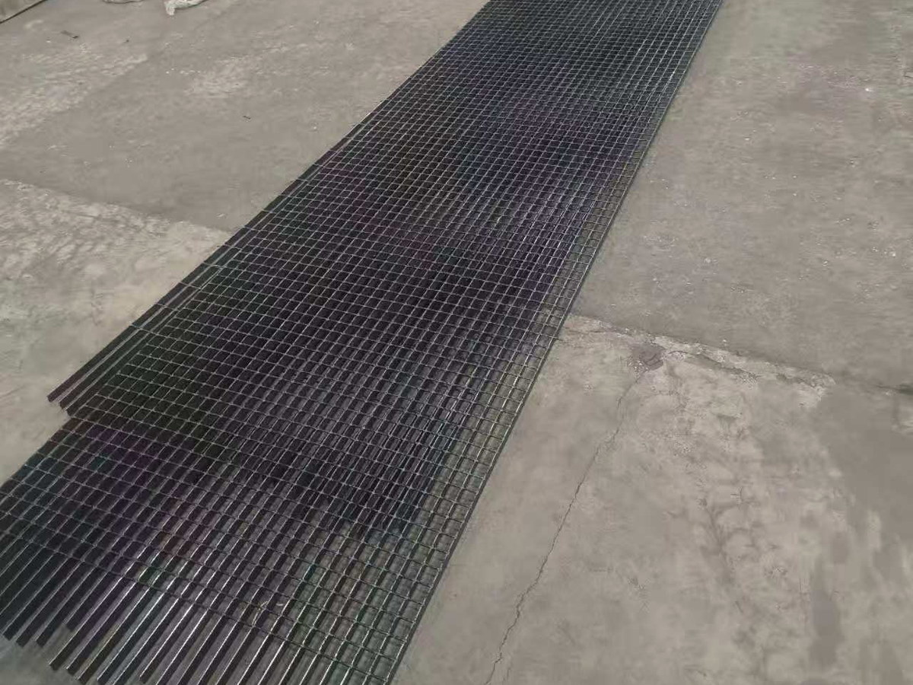
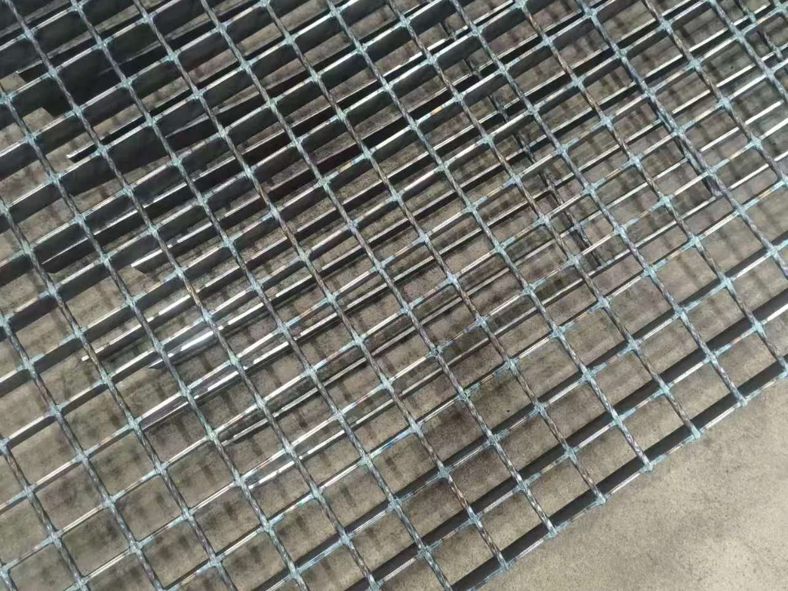
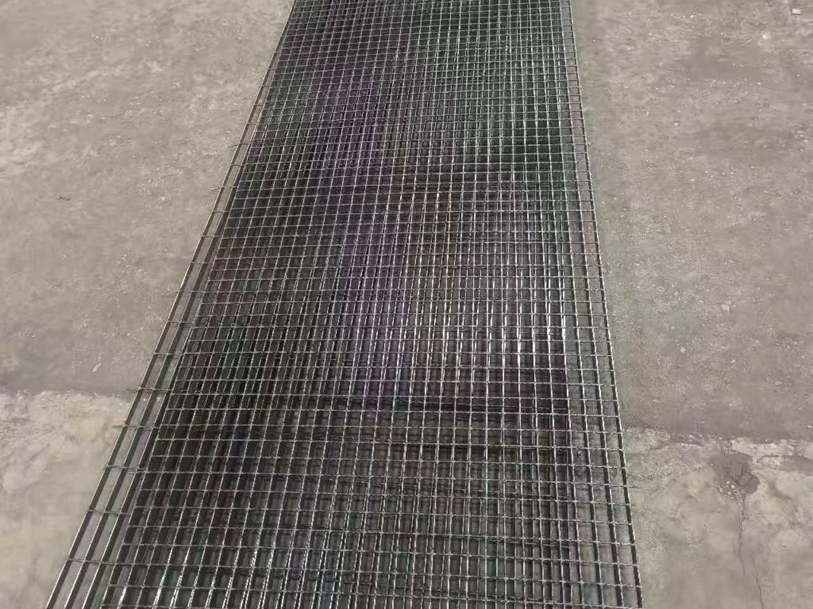

Load Bar Preparation
Flat load bars are arranged and prepared for continuous feeding.

Steel Grating Production Lines
A heavy-duty automated production system engineered for high-volume industrial steel grating manufacturing, combining resistance welding, servo pulling and HMI + PLC control.
Product Information
The GGV Series is Xinzhou's heavy-duty engineering system for the high-volume production of industrial steel gratings. It integrates flat load bars with automatically fed twisted cross bars using transformer technology and microcomputer controls.
The line is managed through an HMI + PLC system and driven by high-precision servo pulling. Standard and customized configurations are available according to grating specifications, output targets, factory layout and required automation level.

The water-cooled transformer delivers high welding current, efficient cooling and long service life. During production, a heavy-duty hydraulic correction mechanism realigns the steel grating panel to maintain a flat and uniform finished result.
Automatic servo cross bar feeding, dual-rod stocking and the load bar pre-feeding system reduce waiting time between welding cycles. HMI + PLC control provides clear visual operation, while servo pulling allows the cross bar pitch to be adjusted through the touch screen according to the required product specification.
Integrated IoT functions support remote monitoring, fault diagnosis and program updates, helping Xinzhou's technical team respond efficiently to overseas service requirements.
Final specifications can be configured according to the required grating size, material and production target.
| Parameter | GGV-1250-1000 | GGV-1600-1000 | GGV-2000-1000 | GGV-3000-1200 |
|---|---|---|---|---|
| Welding Width | 600-1000 mm | 600-1000 mm | 600-1000 mm | 600-1200 mm |
| Load Bar Thickness | 2-6 mm | 2-8 mm | 2-10 mm | 2-8 mm |
| Load Bar Height | 20-70 mm | 20-70 mm | 20-70 mm | 20-100 mm |
| Cross Bar Diameter | 4-6 mm | 4-8 mm | 4-8 mm | 4-8 mm |
| Welding Stroke | 12-14 strokes per minute | |||
| Cross Bar Feed | 24-28 bars per minute | |||
| Input Power | 380V, 50Hz / Customized | |||



Flat load bars are arranged and prepared for continuous feeding.
Twisted cross bars can be produced and cut through the integrated forming line.
Servo-controlled systems feed load bars and cross bars into the welding station.
The main machine press-welds the bars under programmed current and pressure.
Panels can be trimmed, cut to length and finished with binding bars.
Completed panels are discharged and stacked for the next production stage.
Yes. The machine model, welding width, load bar range, cross bar specification, output and automation configuration can be planned according to your product and factory requirements.
The line is designed for industrial steel grating panels, platform grating, walkway grating and other welded grating products within the configured specification range.
Yes. Twisted bar forming, edge trimming, panel cutting, binding bar welding, side discharge and stacking equipment can be integrated according to the required workflow.
Xinzhou can provide on-site installation, commissioning, production testing, operator training and maintenance guidance for overseas projects.
The standard input power is 380V, 50Hz. The electrical configuration can be customized according to the power conditions in the customer's factory.